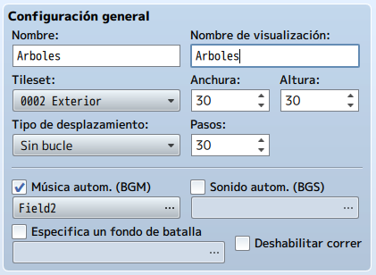
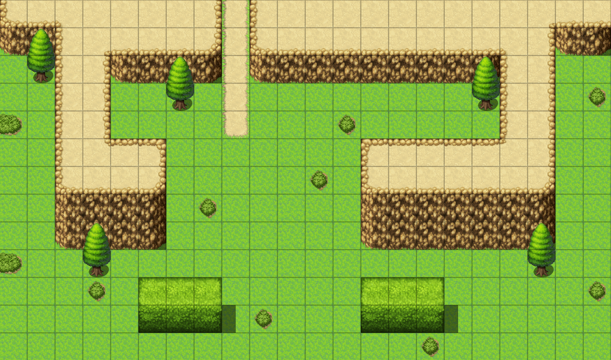
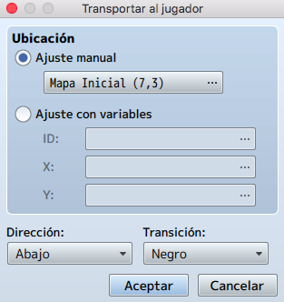
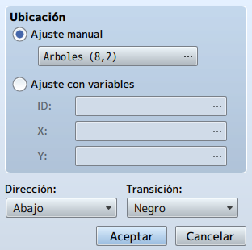
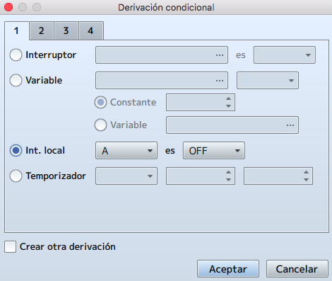
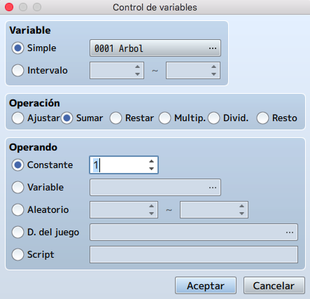
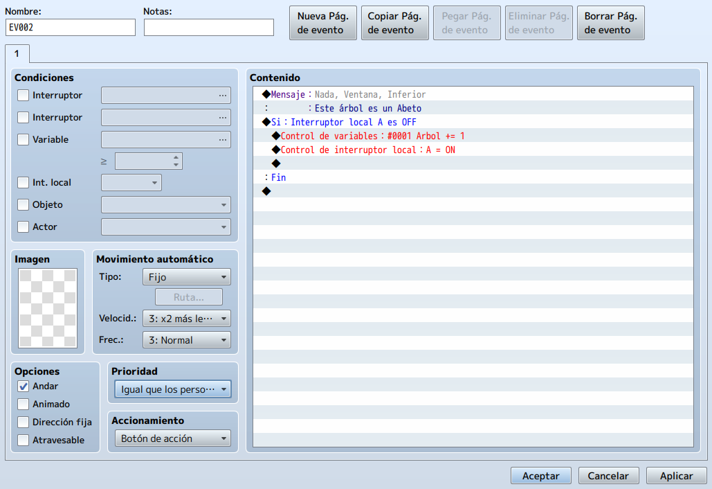
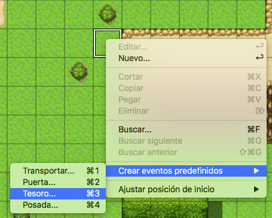
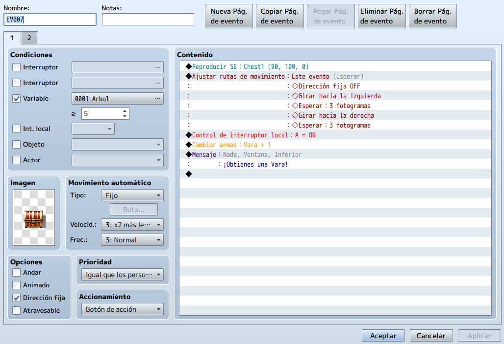

En este tema aprenderemos a utilizar las variables en nuestros eventos.
Dicho elemento nos permite asignar comportamientos a los eventos para que dependan de ciertas condiciones.
Si estas familiarizado con algún lenguaje de programación, probablemente ya sabes como se utilizan las
variables.
Sin embargo si no lo estas, vamos a ver a las variables como cajas en la vida real. Dichas cajas pueden
contener cualquier cosa pero por fuera siguen viéndose como cajas.
Este principio se aplica igual en la programación, ya que una variable puede contener algún valor que podemos
utilizar mas adelante en nuestro código y como su nombre indica, este contenido puede variar dependiendo de
nuestras necesidades.
Pero, ¿cómo podemos usar esto en RPG Maker?
Pues, aquí algunas ideas:
• Hacer un seguimiento de los cofres abiertos a lo largo del juego.
• Cambiar la recompensa de una misión dependiendo de cómo el jugador la completó. Por ejemplo, dando
una recompensa mayor si mato a todos los bandidos de la zona en lugar de solo esquivarlos.
• Contando el número de enemigos que quedan en una determinada pantalla.
• Contando los pasos que ha dado su jugador. Esto tiene varias aplicaciones, como causar un Game Over
no estándar cuando el jugador excede un cierto número de pasos u otorgar al jugador un logro o
habilidad.
• También puedes usar una variable para aumentar o disminuir el poder de una habilidad.
Veamos un ejemplo de como funcionan las variables, creando un mapa donde tendremos una serie de árboles que
tendremos que encontrar.
Para ello empezaremos creando un nuevo mapa con las siguientes características:

Si bien MAP001 viene con mosaicos de césped ya configurados, los mapas creados posteriormente están
completamente en blanco.
Es señalable el hecho de que un mapa de 30×30 es lo suficientemente grande como para requerir que use las
barras de desplazamiento.
Nos ponemos en modo mapa para poder poder dibujar sobre nuestro mapa.
Dibujaremos un rectángulo con el mosaico Meadow (césped) que comience en (0,0) y termine en (21,12), para un
rectángulo de 22×13 para ajustar el mapa al tamaño maximizado de la pantalla sin tener barras de scroll.
Si no es así, tendremos que ajustarlo para que se vea de esta forma.
Notas:
• Puedes encontrar las coordenadas específicas de un determinado cuadrado en su mapa mirando cerca de
la esquina inferior derecha de la pantalla del mapa mientras su cursor está sobre ese cuadrado.
• Puede marcar la ubicación final de su rectángulo con la herramienta de lápiz para tener una referencia
a dónde desea arrastrar. Esto puede ser útil dado que las coordenadas X e Y dejan de mostrarse mientras
arrastra un rectángulo.
Dibujaremos nuestro mapa para que tenga un detalle similar a este.

Una vez creado el mapa, haremos un evento de transferencia al mapa anterior en el punto más alto del camino (9,0). No olvides cambiar el accionamiento del evento a Toque del jugador y en contenido añadir un comando de Transportar al jugador al primer mapa (Mapa Inicial), debajo de la entrada a la cueva y con dirección Abajo.

Ahora volveremos al Mapa Inicial para editar el evento de transferencia de la puerta de la cueva a este nuevo mapa (Arboles). Colocaremos a nuestro personaje en la posición 8,2 (dos casillas más abajo del inicio del camino) y con dirección Abajo. Nunca deberíamos de redireccionar el evento de transferencia justo encima de otro evento de transferencia en el mapa de destino ya que podría darnos problemas.

Apliquemos el uso de variables a nuestro nuevo mapa.
Si no lo hemos hecho ya, colocaremos 5 árboles en el mapa dentro del área dibujada.
Lo que vamos a hacer ahora es que cada árbol aumente el valor de una variable en uno cuando el jugador
interactúe con ellos. Tenemos que asegurarnos de que el jugador no pueda interactuar con el mismo árbol
varias veces. En otras palabras, cada árbol solo se puede contar una vez.
Hay varias formas, pero vamos a aprovechar lo aprendido ya. Utilizaremos los interruptores locales.
Entonces necesitamos un evento que haga lo siguiente:
• Muestra un cuadro de texto que le dice al jugador un poco sobre el árbol.
• Aumenta el valor de la variable Árbol en 1, si es la primera vez que el jugador interactúa con ese
árbol. De lo contrario, no hará nada.
Tenemos que tener en cuenta lo siguiente:
• El árbol es un objeto sólido, a diferencia del resto de baldosas que hemos utilizado como nuestro par
de transiciones. Eso significa que el jugador no podrá pisar la casilla del evento.
• Es preferible que el jugador interactúe con el árbol en lugar de tener que toparse con él para
desencadenar el evento.
• Necesitaremos un nuevo comando de evento llamado Derivación condicional para
comprobar el interruptor local.
• También tenemos que hacer uso del comando Control de variables.
• Además, necesitaremos un comando de Control de interruptor local. De lo contrario,
usar el comando Derivación condicional sería en vano.
• Básicamente, estás usando el mismo evento cinco veces.
Vamos a intentar crear estos eventos con sólo estas indicaciones. Si no somos capaces, seguiremos los
siguientes pasos.
Empezaremos por ver el comando Derivación condicional
Nota: En programación, un condicional es una declaración que es verdadera cuando se cumple una determinada condición. En este caso, estamos hablando de una condición simple if/else. Por ejemplo, si tengo más de tres gatos, soy una persona de gatos; de lo contrario, no lo soy.
Hacemos click en el check de interruptor local y luego la configuramos de modo que la verificación de condición para A esté APAGADA (OFF).

La Derivación condicional comprueba si el interruptor local A del evento está desactivado. Si es así, agrega 1 al
valor de Arbol y activa el interruptor local A, evitando que un solo árbol agregue más de uno a la variable.
El segundo comando de evento que vamos a ver es Control de variables.
Al igual que los interruptores de control, las variables de control le permiten manipular una sola variable
o un lote (grupo) de variables al mismo tiempo. Sin embargo, las variables le permiten hacer muchas más
cosas que los interruptores. Esto se debe principalmente al hecho de que una variable puede contener
cualquier número (o carácter), mientras que un interruptor solo puede contener un apagado o un en estado.
Para este caso, todo lo que tenemos que hacer es nombrar la variable en cuestión (la llamaremos Arbol),
cambiar la operación a Sumar y establecer el Operando en Constante con un valor de 1. Si dejamos la operación
en Ajustar, se le da a la variable el valor de 1. Queremos que la variable gane 1, no se quede en 1, cuando
el jugador interactúe con el árbol.
Para resumir, cuando el jugador realiza una acción en el árbol por primera vez, la variable "Arbol" aumentará
en 1.
Debe quedar de esta forma.

Finalmente, necesitamos agregar un evento Control de interruptor local. Es un comando de
evento bastante simple que ya hemos visto. Todo lo que puede hacer con ese comando es seleccionar uno de los
cuatro interruptores automáticos y establecer su estado en ON u OFF. Pondremos el interruptor local A en ON.
Terminaremos nuestro evento ajustando la Prioridad a Igual que los
personajes y el Accionamiento a Botón de acción, quedando de la
siguiente forma.

Una vez probado y visto que funciona correctamente nuestro evento, copiaremos y pegaremos este evento en los
otros cuatro árboles que hemos colocado en el mapa y listo.
Podemos hacer esto haciendo click derecho en el evento en el editor de mapas y seleccionando Copiar, luego
haga click con el botón derecho en el cuadrado en el que queremos pegar el evento y seleccionar Pegar.
Alternativamente, puedes utilizar el Copiar página de evento dentro de las propiedades del evento.
Ahora, agreguemos un evento final que requiera que la variable Arbol esté en 5. Lo convertiremos en un cofre
del tesoro, para mostrar el Evento rápido relevante.
En la zona del mapa que elijamos para que aparezca nuestro cofre, haremos click derecho y seleccionaremos
Crear eventos predefinidos/Tesoro...

Debido a que la misión involucró árboles, démosle al jugador algo hecho con madera como recompensa.
Seleccione la Vara de la lista de armas y luego haga clic en Aceptar.
Ahora, hacemos click derecho en ese evento y pulsamos Editar. Lo que queremos es hacer que el cofre sea
invisible hasta que el jugador haya echado un vistazo a los cinco árboles. Para hacerlo, marcaremos la
condición de Variable en la primera página del evento y lo configúraremos para que solo aparezca cuando
sea >= que 5, quedando de esta forma.

Ahora toca probar que todo funciona perfectamente.